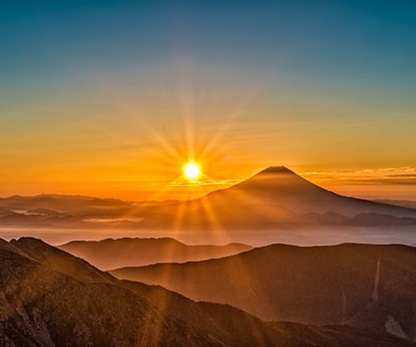

Galería de Paisajes
Paisajes
Retratos
Obras de arte
Jardines de Japón

Monte fuji
Jizos de Kyoto
Linternas de papel
Calles de Tokyo
Calles de Osaka
Hojas de Sakura
Gran santuario de Kumano Nachi Taisha
Tori de Fushimi Inari